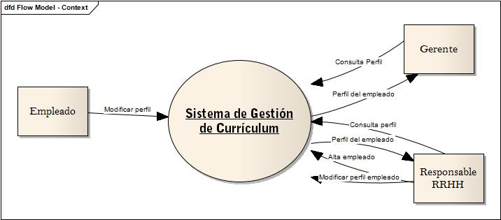

Sistema de Gestion de Curriculums - DFD
Enunciado del sistema:
El Sistema de Gestor de Currículum será el responsable de gestionar los Currículum de los Trabajadores de la Empresa. La aplicación será capaz de almacenar información referente a la formación del personal, y que sea susceptible de ser utilizada por la empresa en la labor de búsqueda de perfiles para sus Proyectos. Los propios Trabajadores serán los que mantengan su currículum, y el Gerente será capaz de consultarlos desde cualquier lugar donde se encuentre, por lo que sería muy recomendable que la arquitectura de la aplicación sea web.
Diagrama de contexto:
El diagrama de contexto representa la vista de más alto nivel del sistema permitiendo visualizar sus principales interfaces.

Diagrama de nivel 1:

(primer post) Porqué Nikola Static Site and Blog Generator?

Nikola es un generador de blog estático, cada post y cada pagina del sitio se encuentran en un archivo html separado. Tampoco usa base de datos ni configuraciones complicadas en el servidor web.
Un sitio web estático es más seguro, utiliza menos recursos y no es necesario actualizar el framework en cada release.
Para empezar de la mejor manera a crear blogs, sitios personales, sitio para la presentacion de un proyecto de software, etc. se puede empezar leyendo el Handbook de Nikola, luego ya queda en tu imaginación lo que puedas hacer con el.
Existen temas ya desarrollados listos para usarlos o podes crear tus propios temas.